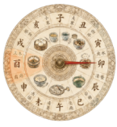
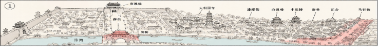

汴京六时罗盘
点击轮盘或时辰即可流转时空
汴京六图舆图交互投影
红色标注区为当前活跃范围
① 汴河晨食：州桥与汴河一带的清晨饮食动线
提示：点击罗盘、地图标签或章节按钮，地图会切换为对应的设计高亮状态。
🏮 汴京游历记 · 一日游消费算账房
选择您在汴京的扮演身份，在各场景购买吃喝玩乐，实时测算大宋民生购买力
扮演角色:
🗂️ 梦华消费清单:
空空如也，请在上方各个场景中选购美食、珍宝或门票。
总花费: 0 文铜钱
📊 购买力大挑战（物价对比）
1文钱 ≒ 现代约 0.6 元人民币
💰 100文铜钱 可吃一顿极丰盛的市井宴席。
💼 汴京普通搬运工、轿夫一日收入约 150 ~ 200文。
当前游历评定：节衣缩食，初来乍到
梦华阁 · 邀作者《孟元老》共话汴京
“老夫曾作《东京梦华录》，录盛时汴京。现代旅者若对这大宋美食、衣冠、杂剧、风土民情有所好奇，皆可向老夫求问。老夫必以宋人之见，尽心作答。”
孟元老：
客官，今日有幸同游东京。不知你想品赏虹桥早市的美食，还是大相国寺的奇珍百宝？亦或是夜宿州桥尝尝那些冰雪冷元子？只管向老夫道来。